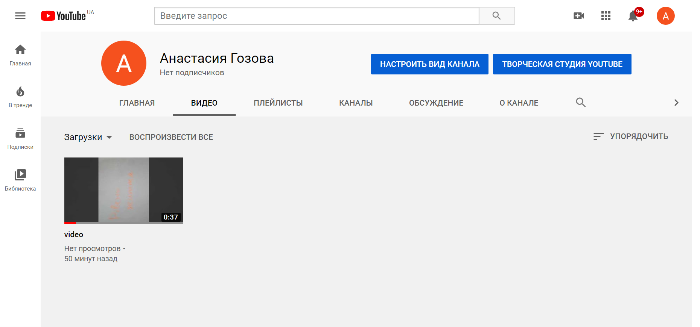
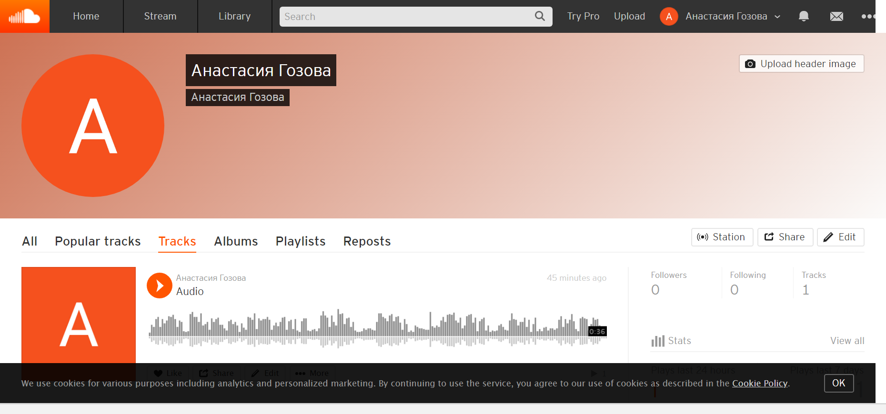
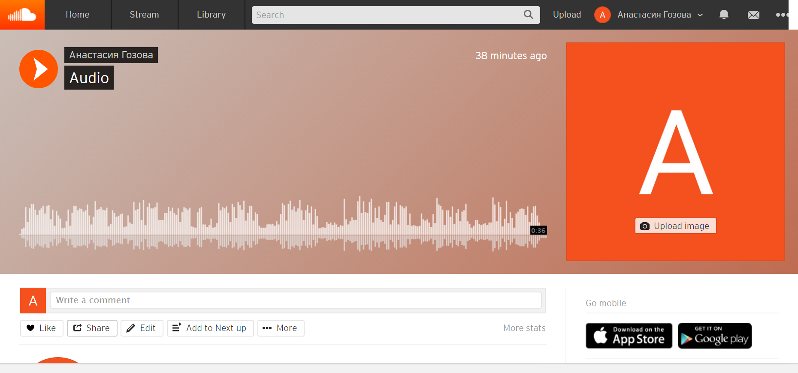
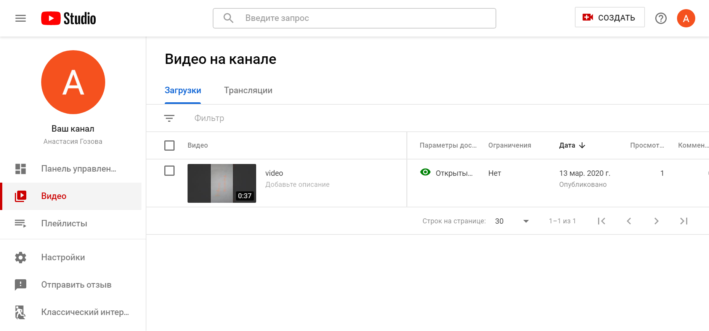
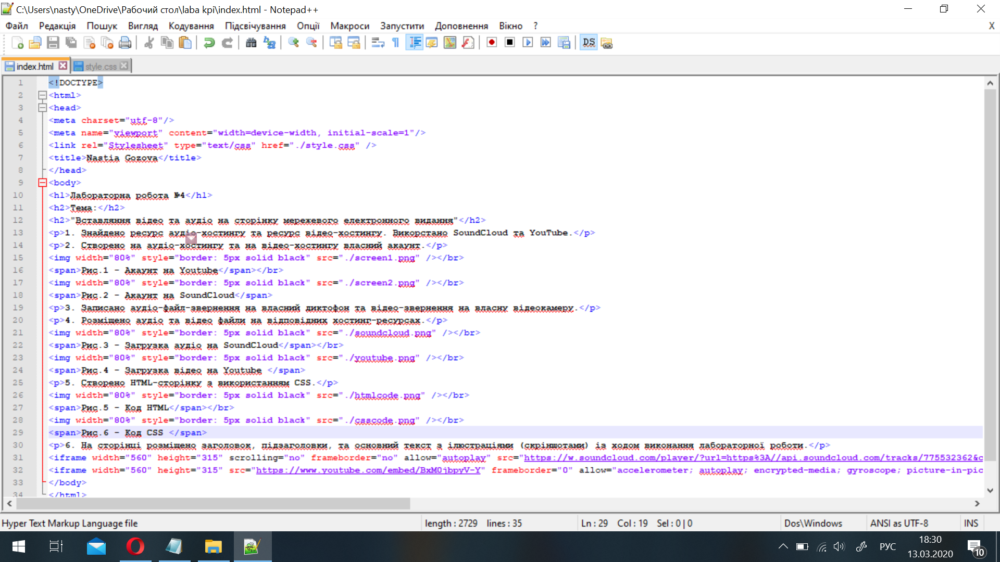
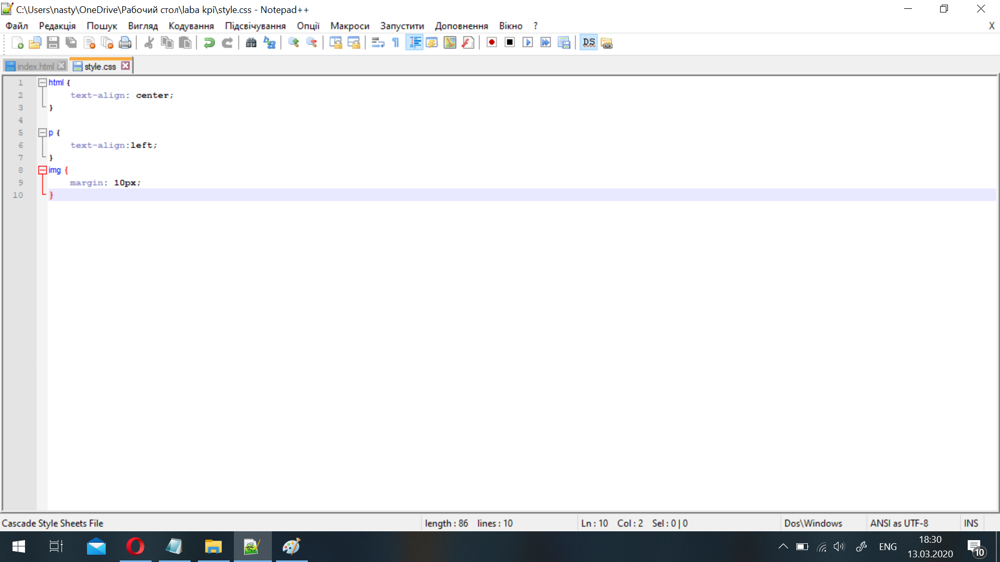
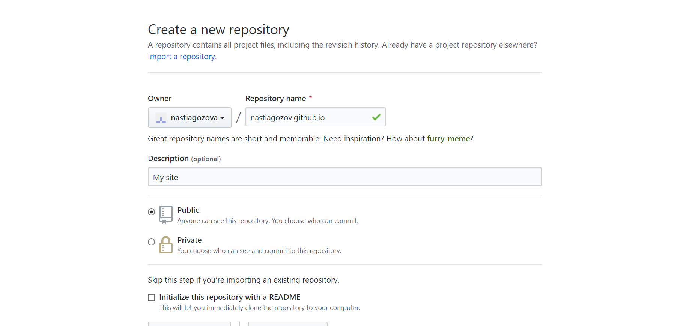
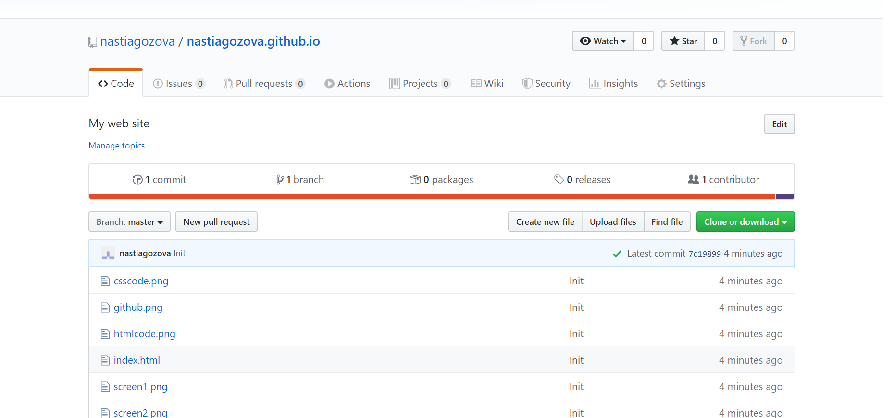

1. Знайдено ресурс аудіо-хостингу та ресурс відео-хостингу. Викорстано SoundCloud та YouTube.
2. Створено на аудіо-хостингу та на відео-хостингу власний акаунт.
 Рис.1 - Акаунт на Youtube  Рис.2 - Акаунт на SoundCloud3. Записано аудіо-файл-звернення на власний диктофон та відео-звернення на власну відеокамеру.
4. Розміщено аудіо та відео файли на відповідних хостинг-ресурсах.
 Рис.3 - Загрузка аудіо на SoundCloud  Рис.4 - Загрузка відео на Youtube5. Створено HTML-сторінку з використанням CSS.
 Рис.5 - Код HTML  Рис.6 - Код CSS6. На сторінці розміщено заголовок, підзаголовки, та основний текст з ілюстраціями (скріншотами) із ходом виконання лабораторної роботи.
7. Загрузка сторінки в інтернет.
 Рис.7 - Загрузка файлів до хостингу  Рис.8 - Загружені файли на хостингуВисновок: на даній лабораторній роботі здійснено вставлення відео та аудіо на сторінку мережевого видання